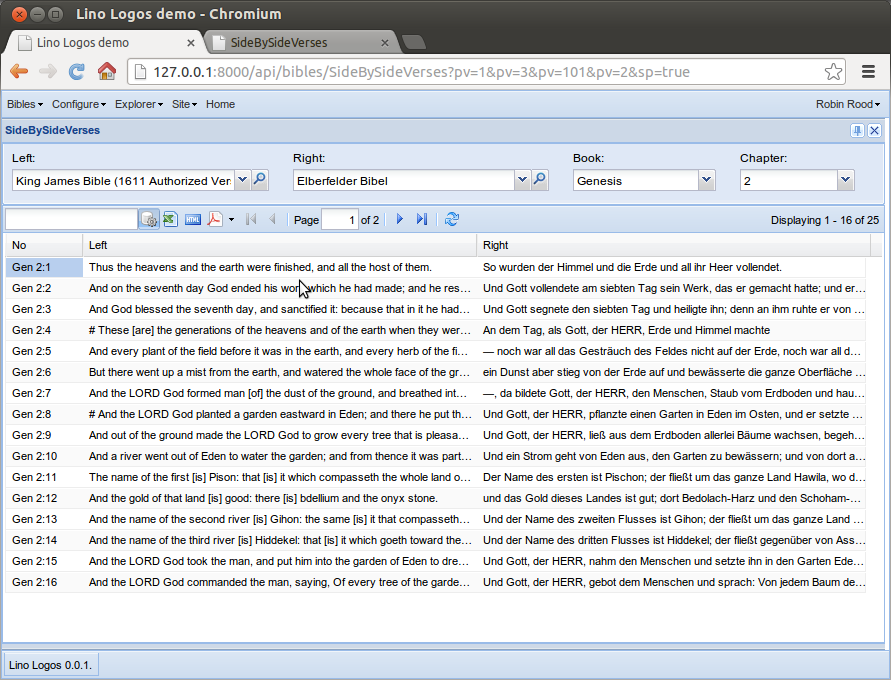
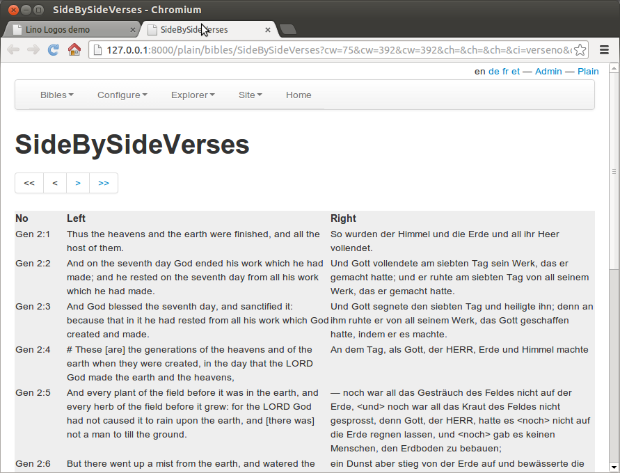
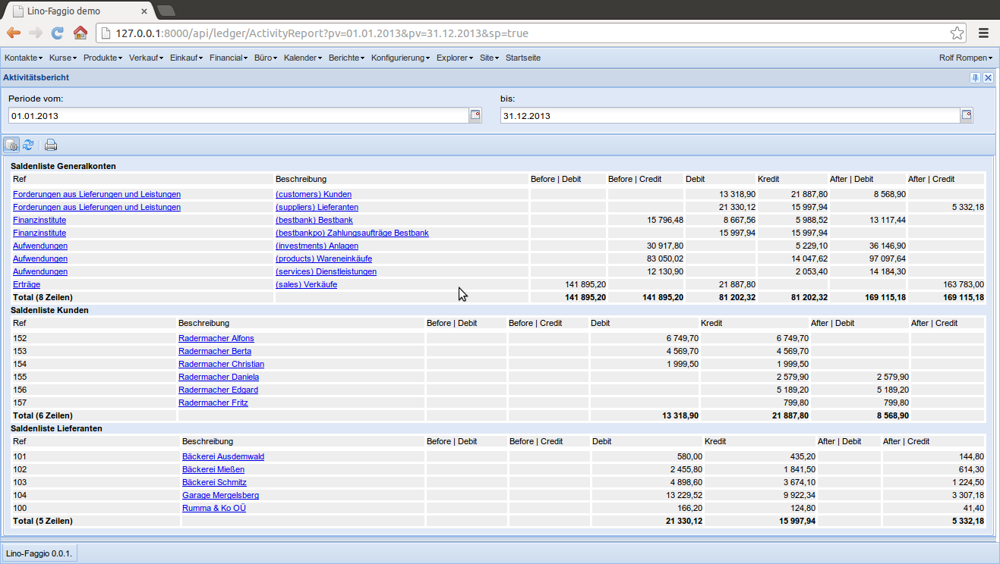

20131014 (Monday, 14 October 2013)¶
Variable row height¶
The Lino Logos project caused a new feature for Lino:
the new class attribute
variable_row_height.
Before and after:
 {kind=link}
{kind=link}
Comments¶
And another new Lino feature caused
by the Lino Logos project:
lino.modlib.comments.
This will be Lino’s custom solution to replace
Django’s comments framework
which has been deprecated because “Most users will be better served
with a custom solution, or a hosted product like Disqus.”
lino.modlib.comments in turn caused another new feature:
Lino now supports insert_layout with only one element:
it uses then a hard-coded height of 10 lines.
You can always specify your own window_size.
Where to get free bibles¶
Should Lino Logos have its own copy of bibles? Or is it enough to generate links to existing online bible servers?
For example here is how “1Mos 1:2” is being served by two German online bibles:
- die-bibel.de (documented here) : http://www.die-bibel.de/bibelstelle/1.Mose%201%2C2/
- bibel-online.net : http://bibel-online.net/buch/elberfelder_1905/1_mose/1/#2
Answer: no we can’t simply rely on external links. Lino Logos should come with its own copies of the different bible editions and install them into its database.
- One reason for this is simply performance: a web request is still more expensive than a database lookup.
- Another reason is that we certainly want to offer text searching, and I don’t know about any service who would do that for us (which is of course a pity because full-fledged text searching (with e.g. language-specific fuzzy matches) is a whole chapter on its own).
The bibel-online.net site looks more open-minded. It also features a cool dual view.
Oh, and I am sorry to see that they have had problems caused by copyright:
Aufgrund zunehmender Kommerzialisierung und Konzentrationsbestrebungen christlicher Quellenanbieter wurde auch uns vom Rat der EKD, vertreten durch die Deutsche Bibelgesellschaft Stuttgart, die seit 1996 bestehende und unbefristete Lizenz für die Fortführung des Angebots der “Luther-Bibel 1984” zum 31.12.2007 ohne Angabe von Gründen entzogen.
(Stellungnahme zum Lizenzentzug der Luther 1984 durch den Rat der EKD)
For me this is just another confirmation of my belief that copyright should be abolished...
Unfortunately my belief about copyright won’t change the world: Copyright is here to stay with us for at least the next years.
So Lino Logos is going to serve only those bible editions who want us to serve them. Which means that copyrighted editions are out of question, at least as long as there is no patron to sponsor the different license fees (and the wage for me or my successor because i wouldn’t continue to work for free on the project in that case).
And yes, I cannot yet publish the source code of my Lino Logos project (nor setup an online server) because the screenshots are partly based on illegaly downloaded material. If I’d publish these fixtures, I’d risk a legal pursuit. No thanks.
I wrote a script get_eb.py which uses BeautifulSoup to extract the 1905 version of the German Elberfelder bible from bibel-online.net. That looks promising but needs some more work, and I’m not even sure whether they like it (even though they seem open-minded).
So the next question is: where can i find non-copyrighted bible editions? Answer: Welcome to the Open English Bible, lead by Russell Allen. Read the Frequently Asked Questions
Get the usfm files from https://github.com/openenglishbible/Open-English-Bible.
“Good enough” is good enough¶
Note à part: Alex Martelli explains why “Good enough” is good enough!. This is Richard Gabriel’s Worse is Better idea about simplicity, correctness, consistency and completeness.
DavLink and /usr/bin/X11¶
DavLink fails to scan the file system of a machine running Ubuntu and SUN Java 1.6:
java.io.IOException: Cannot run program
"/usr/bin//X11/X11/X11/X11/X11/X11/X11/X11/X11/X11/X11/X11/X11/X11/X11/X11/X11/X11/X11/X11/X11/X11/X11/X11/X11/X11/X11/X11/X11/X11/X11/X11/X11/X11/X11/X11/X11/X11/X11/libreoffice":
error=40, Zu viele Ebenen aus symbolischen Links
This is because /usr/bin/X11 is
a symlink to /usr/bin. (And it seems that some parts of the system
rely on this, so we cannot change it).
http://stackoverflow.com/questions/813710/java-1-6-determine-symbolic-links
The EIDReader applet got independant¶
I moved The EIDReader applet to its own repository at https://github.com/lsaffre/eidreader
Which BTW is my first GitHub project.
The applet compiles, the Estonian reader works, the Belgian reader might work but obviously has a problem:
OpenJDK Runtime Environment (IcedTea 2.3.10) (7u25-2.3.10-1ubuntu0.12.04.2)
OpenJDK Server VM (build 23.7-b01, mixed mode)
java.lang.reflect.InvocationTargetException
at sun.reflect.NativeMethodAccessorImpl.invoke0(Native Method)
at sun.reflect.NativeMethodAccessorImpl.invoke(NativeMethodAccessorImpl.java:57)
at sun.reflect.DelegatingMethodAccessorImpl.invoke(DelegatingMethodAccessorImpl.java:43)
at java.lang.reflect.Method.invoke(Method.java:606)
at sun.applet.PluginAppletSecurityContext$4.run(PluginAppletSecurityContext.java:670)
at java.security.AccessController.doPrivileged(Native Method)
at sun.applet.PluginAppletSecurityContext.handleMessage(PluginAppletSecurityContext.java:667)
at sun.applet.AppletSecurityContextManager.handleMessage(AppletSecurityContextManager.java:68)
at sun.applet.PluginStreamHandler.handleMessage(PluginStreamHandler.java:235)
at sun.applet.PluginMessageHandlerWorker.run(PluginMessageHandlerWorker.java:78)
Caused by: java.lang.NoClassDefFoundError: be/fedict/eid/applet/service/Identity
at src.eidreader.BelgianReader.<init>(EIDReader.java:275)
at src.eidreader.EIDReader.readCard(EIDReader.java:447)
... 10 more
Caused by: java.lang.ClassNotFoundException: be.fedict.eid.applet.service.Identity
at net.sourceforge.jnlp.runtime.JNLPClassLoader.loadClass(JNLPClassLoader.java:1404)
... 12 more
Error on Java side: be/fedict/eid/applet/service/Identity
AFAICS this is because of some security restriction. My self-signed code tries to load classes from the
Saldenlisten drucken¶
Ly schlief schon, da fiel mir ein, dass Lino noch gar keine buchhalterischen Ausdrucke machen kann. Buchhalter, zumindest die belgischen, wollen ja dann doch irgendwann eine Saldenliste auf Papier sehen.
Zuerst musste ich mal ein bisschen Wortschatz nachforschen:
| English | Deutsch | Français |
|---|---|---|
| Accounts Balance | Saldenliste | Balance des comptes |
| General ledger | Hauptbuch | Grand livre |
Und dann, nach weniger als zwei Stunden Programmierung schon ein Screenshot:
{kind=link}
Ist er denn nicht süß, unser Lino!